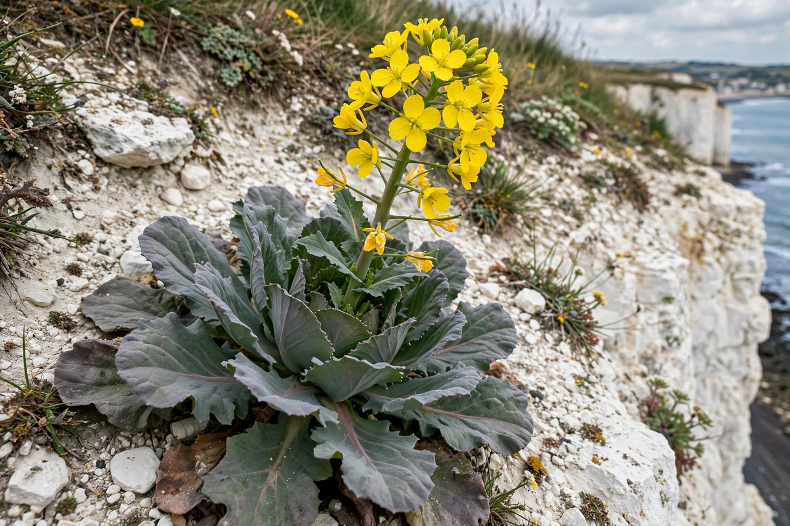

| Kingdom | Plantae |
|---|---|
| Order | Brassicales |
| Family | Brassicaceae |
| Genus | Brassica L. |
| Notable species | B. oleracea, B. napus, B. rapa, B. juncea, B. nigra |
Brassica (/ˈbræsɪkə/) is a genus of plants in the cabbage and mustard family (Brassicaceae). The members of the genus are informally known as cruciferous vegetables, cabbages, or mustard plants. Crops from this genus are sometimes called cole crops — derived from the Latin caulis, denoting the stem or stalk of a plant.
The genus is native to wild plants of Western Europe, the Mediterranean, and temperate regions of Asia. Many species are important agricultural crops, and the genus includes an unusual number of domesticated forms bred from a handful of wild species.
Three diploid species — Brassica rapa (turnip, Chinese cabbage, bok choy), Brassica nigra (black mustard), and Brassica oleracea (cabbage, broccoli, cauliflower, kale, Brussels sprouts, kohlrabi) — hybridised in all combinations to give the three amphidiploid crop species Brassica juncea (brown mustard), Brassica carinata (Ethiopian mustard), and Brassica napus (rapeseed/canola, rutabaga). This pattern of relationships is known as the Triangle of U, after the Korean-Japanese botanist Nagaharu U, who described it in 1935.
Brassica oleracea alone is remarkable: selective breeding of its wild ancestor has produced vegetables as different as heading cabbage, kale, cauliflower, broccoli, and Brussels sprouts, all from a single species.
Brassica vegetables are eaten worldwide and are rich in vitamin C, vitamin K, and glucosinolates — sulphur compounds studied for possible protective effects against cancer. Rapeseed (B. napus) is one of the world's principal sources of vegetable oil; low-erucic-acid varieties are marketed as canola. Mustard seeds from B. juncea and B. nigra are major spices, and several species serve as forage, green manure, and cover crops.
Brassicas are the larval food plants of several butterflies, including the cabbage white (Pieris rapae), and are attacked by pests such as the cabbage root fly and club root disease (Plasmodiophora brassicae), a serious soil-borne pathogen managed by rotation and resistant varieties.
From Wikipedia, the free encyclopedia. Recreated article.